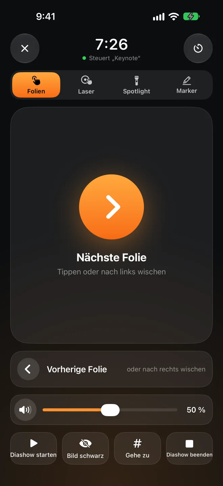

Du gehst – gesperrt.Du kommst – entsperrt.
Presence sitzt in der Menüleiste deines Mac und achtet auf das Bluetooth-Signal, das dein iPhone oder deine Apple Watch ohnehin aussendet. Wird das Signal schwächer, sperrt sich der Bildschirm. Kommst du zurück an deinen Platz, wird er für dich entsperrt. Auf iPhone und Apple Watch musst du dafür nichts installieren.
Die Mac-App ist kostenlos und Open Source. Erfordert macOS 26 oder neuer.
und er entsperrt Geh so weit,
und er sperrt
Apple Watch in der Nähe−52 dBm
Ziehe Du nach rechts und sieh zu, wann der Mac sperrt. Dann geh wieder zurück.
Lieber spät entsperrt als falsch gesperrt.
Bluetooth-Signale schwanken stark – schon wenn du dich umdrehst, ändert sich viel. Presence hält sich an ein paar vorsichtige Regeln: Dein Mac sperrt nicht, während du davorsitzt, und niemand sonst kommt an ihn heran.
Ein paar Sekunden Verlauf, kein Einzelwert
Presence nimmt den Median der letzten 4 Sekunden, mit mindestens 3 Messwerten. Ein einzelner Ausreißer nach oben oder unten zählt nicht.
Zwei Schwellen: eine zum Sperren, eine zum Entsperren
Die Sperrschwelle liegt unter der Entsperrschwelle. Stehst du dazwischen, springt also nichts ständig hin und her. Du kannst jedes Gerät einzeln kalibrieren: Stell dich jeweils 8 Sekunden dorthin, wo entsperrt und wo gesperrt werden soll.
Du tippst noch? Dann wartet es
Wird das Signal schwächer, während noch jemand Tastatur oder Maus benutzt, wartet Presence mit dem Sperren.
Vor dem Entsperren fragt es dein iPhone
Mit Presence Remote bittet dein Mac das iPhone, mit dem beim Koppeln ausgetauschten Schlüssel zu antworten, bevor er dein Passwort eingibt. Ein gefälschtes Bluetooth-Signal kann deinen Mac nicht entsperren.
Die Apple Watch hat Vortritt
Vor dem Entsperren wartet Presence ein paar Sekunden, damit macOS mit deiner Apple Watch entsperren kann. Erst wenn der Mac dann noch gesperrt ist, gibt Presence dein Passwort ein – und prüft alle paar Zeichen, ob noch der Anmeldebildschirm zu sehen ist.
Sperrt, wenn es soll. Hält sich raus, wenn nicht.
All das steckt in der Mac-App – kostenlos.
Keine Sperre mitten im Vortrag
Während Keynote oder PowerPoint eine Präsentation abspielt, pausiert das automatische Sperren. Gehst du nach vorne, zeigt der Beamer nicht plötzlich den Anmeldebildschirm.
Entspannt zu Hause
Kein automatisches Sperren in vertrauenswürdigen Netzwerken, am Netzteil oder außerhalb der Zeiten, die du festlegst. Netzwerke werden am Router erkannt, deshalb braucht Presence keinen Zugriff auf deinen Standort.
Eine Weile pausieren
Du leihst deinen Mac aus oder gehst in ein Meeting? Pausiere für 15 Minuten bis 4 Stunden. Bist du am Ende der Pause nicht in der Nähe, wird sofort gesperrt.
Du erfährst, wenn jemand in deiner Abwesenheit entsperrt
Entsperrt jemand deinen Mac manuell, während du nicht in der Nähe bist, steht das im Verlauf. Presence kann außerdem ein Foto aufnehmen und dir eine Mitteilung aufs iPhone schicken.
Wie lange du heute gesessen hast
„Zeit am Platz“ zeigt dir heute und die letzten 7 Tage und erinnert dich ans Aufstehen, wenn du zu lange sitzt.
Umstieg von BLEUnlock
Presence basiert auf der Idee von BLEUnlock und wurde für aktuelle macOS-Versionen neu geschrieben. Deine Geräte und Schwellenwerte übernimmst du mit einem Klick.



Dein iPhone ist dein Presenter.
Keine Fernbedienung kaufen, keinen Empfänger einstecken. Bewege den Finger auf dem iPhone, und an derselben Stelle auf der Leinwand erscheint ein roter Punkt, ein Spotlight oder eine Markierung. Probier es unten am iPhone aus.
Wähle Laser, Spotlight oder Marker, lege dann den Finger auf das Touchfeld des iPhone und bewege ihn. Markierungen verblassen nach ein paar Sekunden und verschwinden, sobald du die Folie wechselst.
Zum Blättern tippen oder wischen
Zu einer Folie springen, Bild schwarz schalten, Diashow starten und beenden.
Auch auf dem Sperrbildschirm
Folientasten auf dem Sperrbildschirm und in der Dynamic Island – ganz ohne Entsperren.
Auch die Apple Watch ist ein Presenter
Tippe, drehe die Digital Crown oder nutze Doppeltippen. Wische nach links für die Lautstärke deines Mac.
Vortragstimer
Leg fest, wie lange du sprichst. 5 Minuten vor Schluss und bei Zeitablauf spürst du ein Tippen am Handgelenk.
Mac-Lautstärke
Video in der Präsentation zu laut oder zu leise? Regle es, ohne zurückzulaufen. Auf der Leinwand erscheint dabei keine Lautstärkeanzeige.
Jede Präsentations-App
Keynote, PowerPoint, Google Präsentationen, PDFs. Punkt und Spotlight werden darübergelegt und klicken nie etwas an.
Sperren ist gratis. Der Presenter ist Pro.
Die Mac-App und Presence Remote für iPhone und Apple Watch sind kostenlos. Nur die Präsentationssteuerung gehört zu Presence Pro.
Mac-App
Open Source, von Apple notarisiert, aktualisiert sich selbst.
- Sperrt, wenn du gehst, und entsperrt, wenn du zurück bist
- Bleibt beim Präsentieren oder zu Hause entsperrt
- Verlauf und Zeit am Platz
Presence Remote
Die Begleit-App für iPhone und Apple Watch.
- Sperren vom iPhone, von der Apple Watch oder im Kontrollzentrum
- Automatisches Sperren pausieren und fortsetzen
- Mitteilung, wenn dein Mac gesperrt wird oder jemand ihn entsperrt
- Verschlüsselte Bestätigung vor dem Entsperren
Presence Pro
Präsentationssteuerung: Folien, Laser, Spotlight, Marker, Lautstärke und Vortragstimer – auf iPhone und Apple Watch.
Beide Abos kannst du zuerst 7 Tage kostenlos testen. Alle drei funktionieren mit der Familienfreigabe.
Upgrade in der AppDein Mac hört nur auf dein iPhone.
Kein Account, kein Server
Mac und iPhone kommunizieren direkt per Bluetooth, nie über das Internet. Der Entwickler erhält nichts von dir.
Jeder Befehl ist verschlüsselt
Beim Koppeln entsteht ein Schlüssel, den nur deine Geräte kennen. Damit wird jeder Befehl und jeder Status verschlüsselt und geprüft – ein fremdes iPhone kann also keine Befehle senden.
Dein Passwort bleibt im Schlüsselbund
Das Anmeldepasswort zum Entsperren wird im Schlüsselbund deines Mac gesichert – und erst, nachdem Presence geprüft hat, dass es stimmt.
Open Source
Die Mac-App ist vollständig Open Source. Du kannst genau nachlesen, wie sie entscheidet und wie sie entsperrt.
Fragen
Muss ich eine App auf dem iPhone installieren?
Nein. Presence achtet auf das Bluetooth-Signal, das iPhone und Apple Watch ohnehin senden – die Mac-App allein sperrt und entsperrt also schon. Mit Presence Remote kannst du außerdem aus der Ferne sperren, Mitteilungen erhalten und vor dem Entsperren eine verschlüsselte Bestätigung verlangen. Presence Pro bringt die Präsentationssteuerung dazu.
Was brauche ich?
Einen Mac mit Bluetooth LE und macOS 26 oder neuer. Presence Remote braucht iOS 26 bzw. watchOS 26 oder neuer. Es geht auch nur mit einer Apple Watch oder mit einem anderen Bluetooth-Gerät, das regelmäßig mit einer festen Adresse sendet.
Was ist der Unterschied zu „Mit Apple Watch entsperren“?
Die integrierte Funktion entsperrt nur; wenn du weggehst, sperrt sie nicht. Presence macht beides. Beim Entsperren wartet es zuerst ein paar Sekunden, damit deine Apple Watch den Mac entsperren kann, und gibt dein Passwort nur ein, wenn das nicht geklappt hat. Beides arbeitet zusammen.
Wird mein Mac gesperrt, obwohl ich davorsitze?
Das Signal muss mehrere Sekunden lang schwach bleiben, und die Sperrschwelle liegt unter der Entsperrschwelle. Tippst du noch oder benutzt du die Maus, wartet das Sperren. Ist es dir trotzdem zu empfindlich, kalibriere neu unter „Geräte“.
Warum gibt es die Mac-App nicht im Mac App Store?
Automatisches Entsperren heißt, dein Anmeldepasswort einzugeben – und das dürfen Apps aus dem Mac App Store nicht. Deshalb ist die Mac-App von Apple notarisiert, wird über GitHub geladen und aktualisiert sich selbst.
Welche Präsentations-Apps funktionieren?
Zum Blättern sendet Presence Pfeiltasten, die Keynote, PowerPoint, Google Präsentationen und PDF-Viewer verstehen. Laser, Spotlight und Marker zeichnet Presence über alles andere – sie funktionieren also mit allem, was gerade auf dem Bildschirm ist. Aktiviere vorher in Presence auf dem Mac „iPhone & Watch › Präsentationssteuerung erlauben“.
Belastet das den Akku?
iPhone und Apple Watch senden diese Signale sowieso. Presence hört nur auf dem Mac mit und braucht dort normalerweise unter 1 % CPU.